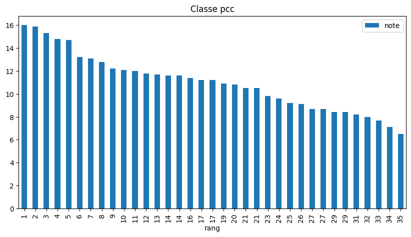
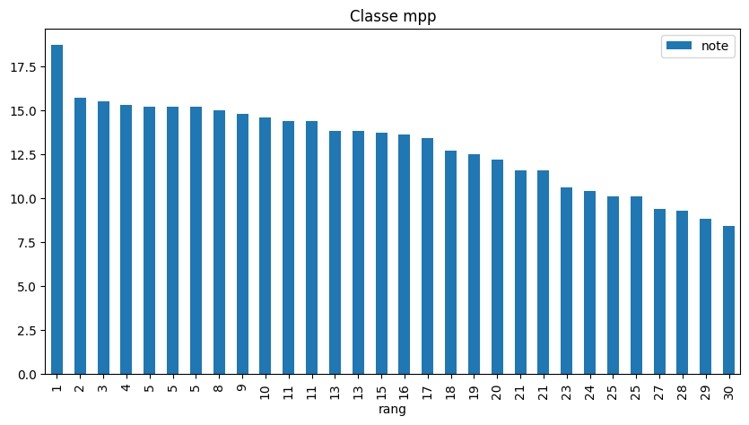

DS 2 : détail des notes
Contents
DS 2 : détail des notes#
Le fichier contenant les notes est ici.
Chargement des notes#
import matplotlib.pyplot as plt
import pandas as pd
plt.rcParams['figure.figsize'] = (10, 5)
pd.options.display.float_format = '{:,.1f}'.format
df_ds2 = pd.read_csv("ds2.csv")
df_ds2["rang"] = df_ds2["rang"].fillna(0).astype(int)
df_ds2.head()
| classe | nom | prenom | 1 | 2 | 3 | 4 | 5 | 6 | 7 | ... | 11 | 12 | 13 | 14 | 15 | 16 | 17 | id | note | rang | |
|---|---|---|---|---|---|---|---|---|---|---|---|---|---|---|---|---|---|---|---|---|---|
| 0 | bareme | bareme | bareme | 2 | 3 | 1.0 | 5.0 | 1.0 | 2.0 | 1.0 | ... | 1.0 | 1.0 | 1.0 | 1.0 | 2.0 | 2.0 | 5.0 | NaN | NaN | 0 |
| 1 | mp | NaN | NaN | 5 | 2 | 1.0 | NaN | NaN | 5.0 | 0.0 | ... | NaN | NaN | NaN | 5.0 | 1.0 | NaN | NaN | 0 | NaN | 0 |
| 2 | mpp | NaN | NaN | 5 | 5 | 5.0 | 4.0 | 5.0 | 5.0 | 5.0 | ... | 5.0 | 5.0 | 5.0 | 5.0 | 4.0 | 2.0 | 1.0 | NaN | 15.3 | 4 |
| 3 | mpp | NaN | NaN | 5 | 5 | 5.0 | 4.0 | 5.0 | 3.0 | 3.0 | ... | 5.0 | 5.0 | 5.0 | 5.0 | 5.0 | 5.0 | NaN | 77 | 14.4 | 11 |
| 4 | mpp | NaN | NaN | 5 | 5 | 5.0 | 4.0 | 5.0 | 5.0 | 2.0 | ... | 5.0 | NaN | NaN | 5.0 | 2.0 | NaN | NaN | 2008 | 10.4 | 24 |
5 rows × 23 columns
Chaque colonne entre 1 et 17 correspond à une question. La 1ère ligne indique le barème. Les autres lignes correspondent aux élèves, dont l’identifiant id est la date d’anniversaire.
Par exemple, pour avoir les résultats de(s) élève(s) de rang 1 :
df_ds2.query("rang == 1")
| classe | nom | prenom | 1 | 2 | 3 | 4 | 5 | 6 | 7 | ... | 11 | 12 | 13 | 14 | 15 | 16 | 17 | id | note | rang | |
|---|---|---|---|---|---|---|---|---|---|---|---|---|---|---|---|---|---|---|---|---|---|
| 28 | mpp | NaN | NaN | 5 | 5 | 5.0 | 5.0 | 5.0 | 5.0 | 4.0 | ... | 5.0 | 5.0 | 5.0 | 5.0 | 3.0 | 5.0 | 5.0 | 611 | 18.7 | 1 |
| 39 | pcc | NaN | NaN | 4 | 5 | 5.0 | 4.0 | 5.0 | 5.0 | 3.0 | ... | 5.0 | 5.0 | 3.0 | 5.0 | 4.0 | NaN | NaN | 1103 | 16.0 | 1 |
2 rows × 23 columns
Moyenne, variance#
df_ds2[["note", "classe"]].groupby("classe").agg(["mean", "std"], numeric_only=True) # mean = moyenne, std = écart-type
| note | ||
|---|---|---|
| mean | std | |
| classe | ||
| mp | NaN | NaN |
| mpp | 13.0 | 2.5 |
| pcc | 11.0 | 2.5 |
Classement#
for c in ["pcc", "mpp"]:
df_ds2.query(f"classe == '{c}'")[["note", "rang"]].set_index("rang").sort_values(by="note", ascending=False).plot.bar(title=f"Classe {c}")
plt.show()


Résultats par question#
df_questions = df_ds2[list(map(str, range(1, 18))) + ["classe"]]
df_questions.query("classe in ['mpp', 'pcc']").groupby("classe").mean(numeric_only=True).T.plot.bar(title="Taux de réussite par question")
<AxesSubplot:title={'center':'Taux de réussite par question'}>
n_eleves = len(df_questions) - 1
((n_eleves - df_questions.drop(columns="classe").isnull().sum())/n_eleves).plot.bar(title="Pourcentage de réponses par question")
<AxesSubplot:title={'center':'Pourcentage de réponses par question'}>